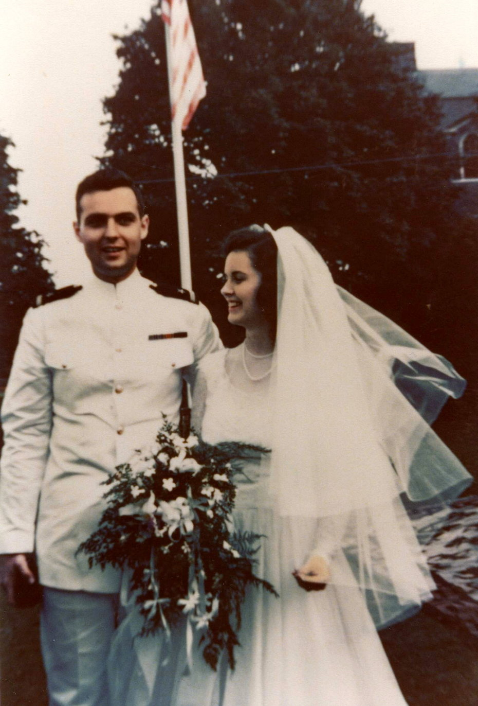
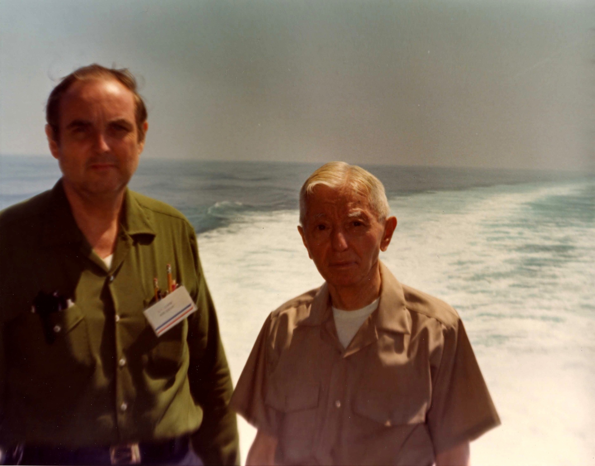

Nuclear Engineering Pioneer David T. Leighton: A proponent of Naval History who made History
It is with sadness that we report the passing of David Trent Leighton on January 6, 2017 in Savannah, GA due to complications from pneumonia just a few days short of his 92nd birthday. He will be greatly missed by all who knew him.
In his retrospective Aircraft Carriers at War, Admiral James L. Holloway III recalled that when he was the Chief of Naval Operations, when Admiral Hyman G. Rickover came to his office “he was all business and he usually had David Leighton , his senior engineering assistant for nuclear power in surface warships with him.”
Holloway thought very highly of Rickover’s assistant:
Leighton was very smart, a brilliant engineer, and impeccably loyal. On occasion Rickover would get furious with him, have a tantrum, and say to him, “that’s the dumbest thing I ever heard. I don’t know why I put up with your stupidity. You’re not doing what I told you to do.” Leighton would stand there, listen to Rickover, then continue his conversation as if Rickover hadn’t even spoken. Rickover would always simmer down and eventually agree with Leighton, once Dave explained himself. He was enormously patient and considerate of Admiral Rickover. I believe he always felt these outbursts were Rickover’s way of testing him, making sure Leighton was willing to stand behind his words and not back down.
David Trent Leighton was born 21 Jan. 1925 at Los Angeles, CA, the fifth child of Rear Adm. Frank Thomson Leighton and Elizabeth Ohler Leighton.

With World War II ongoing, the young Leighton followed his father’s career choice and graduated from the U.S. Naval Academy in 1945 with the Class of 1946 standing 23 in a graduating class of 1,066. As Ensign in the navy he transferred from sea duty in the Far East to join the MIT Class of '48 in the second half of sophomore year. He completed the 22-month course MIT set up after World War II to train naval officers in the fundamentals of radar design and graduated with a B.S. in Electrical Engineering. While attending MIT he married Helen Milligan of San Diego, who, following her marriage, completed her senior year of college at Boston University graduating with the class of '48 also. After graduation David returned to sea duty in an aircraft carrier as Electronics and Radio Officer, followed by shore duty as an instructor in Radiological Defense.
In 1951 he was selected for the Naval Nuclear Propulsion Program by then Capt. H.G. Rickover, and in 1953 was in the first group to receive an MS degree in Nuclear Engineering from MIT where he earned the highest grade point average of the naval students who have completed the course. He served in the Naval Nuclear Propulsion Program from 1952 to 1980, first as a naval officer (reaching the rank of Commander in the Engineering Duty field) and then as a civil servant where he became a GS-18 and then a charter member in the Senior Executive Service. He served 1953-54 as cognizant engineer responsible for the overall design and development of control and electrical systems for the sodium-cooled nuclear reactor and steam propulsion plant of the submarine Seawolf and its land prototype; 1954-59 as Project Officer for development of the two-reactor plant for the submarine Triton and its land prototype, the ship which cruised around the world submerged on its first voyage after completion; concurrently 1956-59 as Project Officer for development of the two-reactor plant for the first nuclear frigate Bainbridge and as Laboratory Officer for the Knolls Atomic Power Laboratory; 1959-61 as Nuclear Power Superintendent at Mare Island Naval Shipyard responsible for all phases of nuclear reactor plant work for nine ballistic missile and attack submarines in various phases of construction.
In 1961 he resigned from the US Navy and accepted employment with the Atomic Energy Commission (later the Department of Energy) with collateral responsibilities in the Navy's Bureau of Ships (later the Naval Sea Systems Command) as a senior civil servant in the same program with which he had been involved while a Naval officer. From 1962-79 he served as Associate Director for Surface Ships; beginning in 1964 he served as Associate Director for the water cooled Breeder Reactor and Program Manager for Surface Ship Nuclear Propulsion; 1979-80 he was Assistant to the Director for Special Projects involving nuclear submarines, nuclear surface warships, and the water cooled breeder reactor; and from 1956 until his retirement from the government in Jan. 1980, as a principal advisor to the Director, Naval Reactors Division, Department of Energy and Naval Sea Systems Command, Adm. Hyman G. Rickover.

His work over this period had a tremendous impact on the development of nuclear power for the U.S. Navy. In his nomination for the Naval Academy Distinguished Graduate award he was cited for his “remarkable and enduring efforts” to create the two-reactor propulsion plant for the Nimitz class aircraft carriers. These 10 carriers form the backbone of the Navy’s first line surface striking force. He was central to their development.
Honors received include: Secretary of the Navy Letter of Commendation and Medal, 1959; Department of Energy Exceptional Service Medal, 1979; Department of Energy Award for Special Act or Service, 1979; Department of the Navy Meritorious Civilian Service Award, 1976; Energy Research & Development Administration Special Achievement Award, 1976; Atomic Energy Commission Distinguished Service Award and Gold Medal, 1972; and Department of Defense Distinguished Civilian Service Award, 1970, the highest award given to a civilian by the Department of Defense. The Naval Historical Foundation’s annual naval history lecture is named for him.
In 1980 David retired from the Civil Service and established Leighton Associates, Inc., a small management consulting firm in Northern Virginia whose clients included nuclear power utility plants. During this time he was recognized by GPU for his efforts in enabling the safe restart of the undamaged Three Mile Island nuclear reactor. In 1992 David retired from Leighton Associates and closed the firm.
Subsequent to retirement, David remained active, engaging in two of his loves: travel and genealogy. With Helen, his spouse of over 60 years, he traveled the globe – visiting every continent except Antarctica. These travels are documented in a remarkable series of thirty journals treasured by the family. Many of their travels coincided with investigation of family roots, including visits to cemeteries and parishes in Scotland. Their work, combined with the records collected by a distant relative Margaret Bowman, culminated in a more than 700-page scholarly genealogy (The Ancestors and Descendents of George Leighton and Jean Guthrie, Higginson 1997). After the passing of his beloved wife of 64 years, David continued to travel, taking trips to Angkor Wat in his late 80’s and Europe at age 90.
In his later years David and Helen were able to give back to the community in the form of significant philanthropy. They were major donors to the Naval Historical Foundation, Naval Academy, MIT, and the Wilmer Eye Institute of Johns Hopkins. These gifts, totaling many millions of dollars, support professorships in information technology (Naval Academy), mathematics (MIT) and the development of new techniques for curing blindness (Johns Hopkins).
All his long life David was devoted to his family, taking great pride in the education and achievements of his children and grandchildren. He is survived by his sons Tom (CEO and co-founder of Akamai and Professor of Mathematics at MIT) and David Jr. (Professor of Chemical Engineering at Notre Dame), grandchildren James (Captain, USAF), Eleanor, Alexander, and Rachel, and great grandchildren Charles and Elizabeth.
The Naval Historical Foundation has been working with David and David Jr. to publish a compendium oral history, memoir, letters, and lecture to be posted in the near future as a historical resource for scholars as well as a tribute to a remarkable individual.